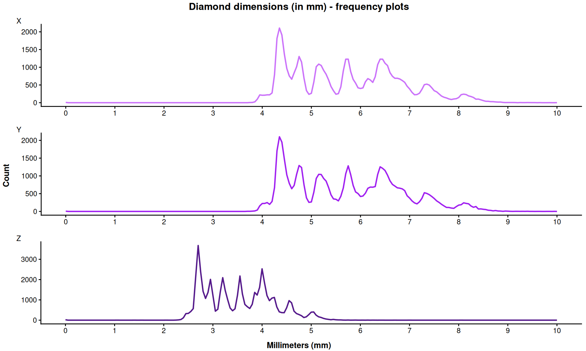

Code
# X
# Loading dataset
df <- diamonds
x <- df |>
ggplot(aes(x = x)) +
geom_freqpoly(binwidth = 0.05, size = .8, color = "#cb73fa") +
scale_x_continuous(breaks = seq(0,10,1), limits = c(0,10)) +
labs(x = "Length",
y = "Count",
title = "Frequency of diamond length (in mm)",
tag = "X") +
theme_classic() +
theme(axis.title = element_blank(),
title = element_blank(),
plot.tag = element_text(size = 9))
# Y
y <- df |>
ggplot(aes(x = y)) +
geom_freqpoly(binwidth = 0.05, linewidth = .8, color = "purple") +
scale_x_continuous(breaks = seq(0,10,1), limits = c(0,10)) +
labs(x = "Width",
y = "Count",
title = "Frequency of diamond length (in mm)",
tag = "Y") +
theme_classic() +
theme(axis.title = element_blank(),
title = element_blank(),
plot.tag = element_text(size = 9))
# Z
z <- df |>
ggplot(aes(x = z)) +
geom_freqpoly(binwidth = 0.05, size = .8, color = "purple4") +
scale_x_continuous(breaks = seq(0,10,1), limits = c(0,10)) +
labs(x = "Depth",
y = "Count",
title = "Frequency of diamond length (in mm)",
tag = "Z") +
theme_classic() +
theme(axis.title = element_blank(),
title = element_blank(),
plot.tag = element_text(size = 9))
xyz <- grid.arrange(x, y, z,
ncol = 1,
top = grid::textGrob("Diamond dimensions (in mm) - frequency plots",
gp = grid::gpar(fontsize = 12, fontface = "bold")),
left = grid::textGrob("Count",
rot = 90,
gp = grid::gpar(fontsize = 10, fontface = "bold")),
bottom = grid::textGrob("Millimeters (mm)",
gp = grid::gpar(fontsize = 10, fontface = "bold")))
Code
plot(xyz)